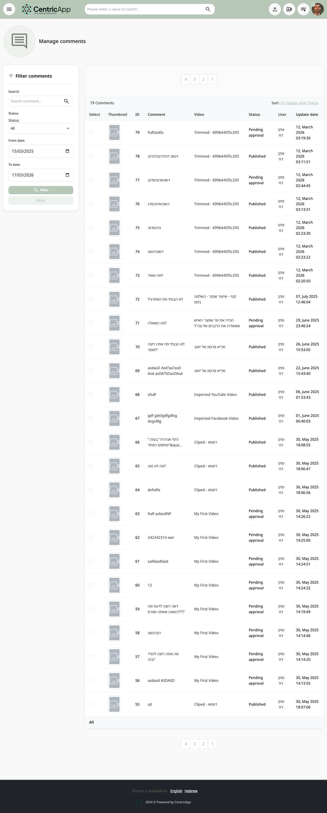
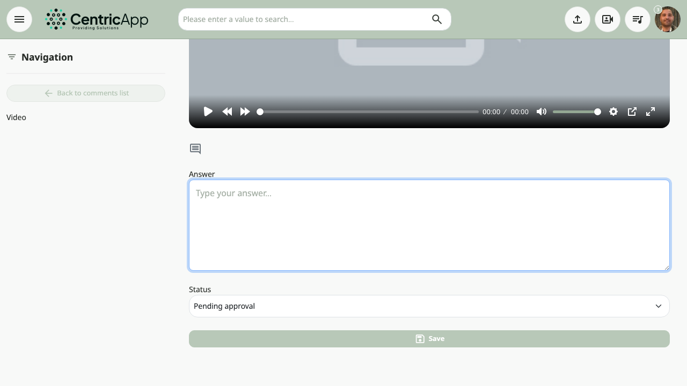

What is the comments management screen?
On the comments management page, all comments (questions/replies) related to videos in the system are shown. Administrators see all comments; a regular user sees only their own. From this screen you can search, filter by status and dates, sort, and go to edit a comment or the related video.

Opening the screen
You can open comments management in one of these ways:
- From the main menu – click Comments or Support (depending on system settings).
- Direct navigation to: /videos/comments (e.g.
https://dev.video/videos/comments).
Filtering comments (left side)
On the left column appears filter comments with these fields:
- Search – enter text to search by comment ID, comment content, or video ID.
- Status – choose from defined statuses (e.g. approved, pending, hidden) or "All".
- From date and To date – limit results to a date range.
- Filter button – apply filtering with the entered values.
- Reset button – clear filtering and return to the normal list.

Comments table
In the center area a table is shown with these columns:
- Select – checkbox per comment (for bulk actions, if available).
- Image – thumbnail of the related video.
- ID – comment ID (sortable).
- Comment – comment content or title; clicking the comment goes to the edit screen.
- Video – video title; link to watch on the video page.
- Status – comment status (sortable).
- User – user who wrote the comment.
- Updated – when the comment was last updated (sortable).
Sorting: click a column header (ID, updated date, status, etc.) to sort the table by that column.

Editing a comment
Clicking comment content (the "Comment" column) or the edit link goes to the edit comment screen, where you can update the question/answer and status. After saving you usually return to the comments list or the video page, depending on settings.

Bulk selection and reset
At the bottom of the table there may be an All link – to select all comments on the page (for bulk actions if configured). Using reset filter clears filters and shows all comments the user is allowed to see again.